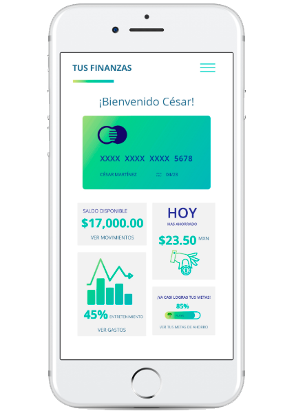

DETALLES
Rediseño de una aplicación financiera.
3 semanas | Individual
ENTREGABLES
- Benchmark
- Research
- Análisis de data
- User Persona
- Prototipo de alta fidelidad
SOFTWARE
- Adobe Xd
- Adobe Illustrator
- Marvel App
DESCRIPCIÓN
El banco más importante del país ha lanzado una nueva aplicación móvil al
mercado para que sus usuarios puedan visualizar sus gastos mensuales y
fomentar el ahorro.
OBJETIVO
Hacer un análisis de la aplicación Tus Finanzas, para definir la dirección
y evolución del producto. Evaluar el desempeño de la aplicación,
de los primeros 6 meses, definir a los user Persona para así proponer los cambios necesarios
para optimizar el producto, atraer nuevos usuarios y decidir en qué se usará el
presupuesto de Facebook Adds.
PROBLEMAS ENCONTRADOS
- Los usuarios no se sienten seguros al registrar su correo e información.
- No brinda información del Banco.
- No ofrece información sobre la app y sus beneficios.
- Visualmente tiene consistencia con la app.
- No se sabe en que dispositivos se puede descargar la app.
USUARIO
A través de User testing y encuestas validamos que el user persona primario que
proponían, debía cambiar, ya que aunque se quiere guiar la aplicación a jovenes
de entre 15-18 años, validamos que sus usuarios fuertes son más parecidos al user
persona secundario. Con el test de usabilidad encontramos los siguientes problemas:
La aplicación tiene varios errores de heurística lo que hace que la aplicaión
no cumpla con el objetivo principal, que es ayudar a ahorrar.
No confían en la aplicación ya que no saben si es perteneciente a un banco o es
una aplicación terciara.
No les parece favorecedor tener que usar varias aplicaciones, prefieren una
sola que tenga todos los beneficios.
Encontramos varios problemas en la navegación que se pueden checar en el
Journey Map de test de usabilidad con usuarios.
RECOMENDACIONES
¿Qué modificaciones se deberían hacer?
Primero, cambiar a su user persona. Para eso realicé ejes de comportamiento
y cuadrantes para poder tener el arquetipo y de ahí obtenerval User Persona.
Segundo, cambiar las debilidades más notorias en cuanto a Heurísticas de
Usabilidad para que el usuario se sienta cómodo al navegar en la aplicación.
También motivar al usuario con incentivos que otorgará el banco, dando al
usuario una razón para usar la aplicación.
Brindar más servicios y beneficios como un balance de gastos, para dar
consejos y tips al usuario, sobre como llevar una salud financiera adecuada.
Dar soporte al usuario mediante chatbots.
Motivar al usuario desde que entra a la aplicación, haciendóle ver lo que
ha logrado ahorrar diariamente.
Visualizar el avance de las metas de ahorro a través de información clara
con gráficas del porcentaje avanzado, la cantidad en cifra de lo que se
desea lograr y la cantidad en cifras de lo que falta para que se logre su meta.
Se podrá editar la meta de ahorro en cualquier momento
Se podrá agregar dinero o disponer dinero de las metas de ahorro en
cualquier momento.
NAVEGACIÓN
La navegación será intuitiva y podrá recorrer toda la aplicación sin la necesidad de dar muchos clicks.
REGISTRO Y LOGIN
Para que el usuario logré registrarse se propone quitar varios pasos y mantener al usuario informado todo el tiempo sobre lo que tiene que hacer. También se propone dar una pequeña introducción con frases breves y claras sobre lo que la aplicación puede ofrecer. Se le da al usuario la libertad de decidir si quiere registrarse por medio de una contraseña segura o por medio de la huella digital. Y esta configuración se guardará automáticamente recordando al usuario y la preferencia de inicio de sesión.
ELEMENTOS VISUALES
Se propone uso de iconos, gráficas y elementos que den identidad al banco, haciendo que se vea seguro y de confianza. Estos elementos visuales ayudarán al usuario para que pueda acceder a la aplicación de una manera rápida y fácil. El rediseño está basado en las tendencias de diseño, dando a la aplicación frescura y sentido de innovación.
PRÓXIMOS ALCANCES
Meta de ahorro compartidas: Otra manera de motivar al usuario a ahorrar,
sería crear una meta compartida que consta de compartir con algún familiar
o amigo una meta y ahorrar juntos a través de una invitación.
Ingresar registro de gastos en efectivo: Los usuarios también podrán
registrar gastos en efectivo,para llevar un mejor control de sus finanzas.
PRÓXIMOS DESARROLLOS
El presupuesto de marketing se debería invertir en el desarrollo de la aplicación en versión Android, ya que gracias al análisis de data, notamos que muchos usuarios utilizan dispositivos Android, lo que equivale a un gran número de usuarios que podrían utilizar la aplicación haciendo que el número de descargas y de registros se incrementen.
PROTOTIPO
